Heroes of Brest Fortress
For the hero and for the person who performed the feat, the highest reward is that the people know about him and remember him.
June 22, 1941 in the twilight of the pre-dawn sky, the border guards saw strange, floating lights from the west. With their approach, the roar of many engines grew. And in moments - the thunder of explosions, howling sea of fire... In it, cut off from the army and the rear, surrounded by invaders, was Brest Fortress. There was no reliable information about her fate, but from all over the huge front from the Baltic to the Black Sea the word was passed from mouth to mouth: the fascist armada was advancing to the east, and in the deep rear of the fortress a handful of brave men had been fighting for over a month ... For three years a fortress was turned into ruins, liberators. July 28, 1944 over Bug the silence of the front line was established.
The heroes
 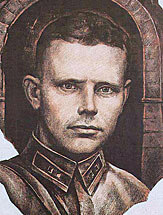
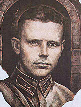 
 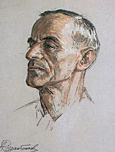
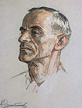  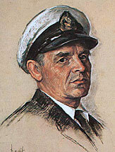 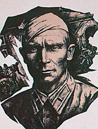 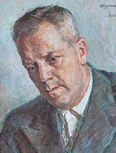 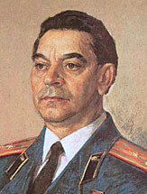 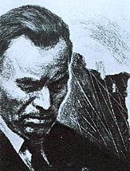
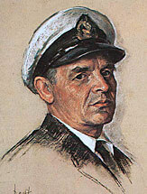 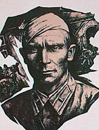 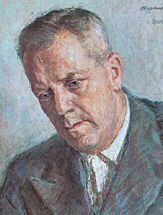 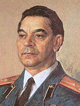 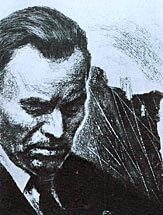  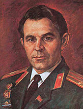 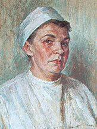
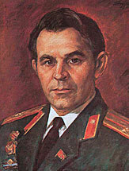 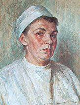  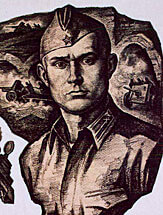 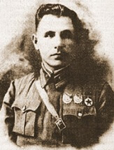
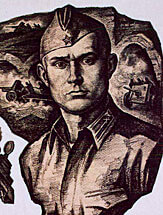 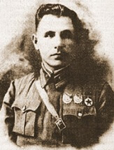 He was born in 1922 in the village of Zabolotye, Minsk region. A few days before the war he graduated from the Kalinkovichi Military Infantry School. On June 18, a nineteen-year-old lieutenant took command of a platoon of the 455th Infantry Regiment, and in the morning of the 22nd, along with other commanders and fighters, entered into an unequal battle with the enemy. Wounded, he continued to fight and remained in the ranks. There was not enough ammunition, food, water, but the fighters fought for every meter of the earth, acting with bayonet, butt, grenade. Reflecting another attack of the enemy, Makhnach was wounded again and unconsciously captured. A month before the Victory Day, he was released from the Vesuvé concentration camp. For courage and heroism, shown during the defense of the Brest Fortress, AI Makhnach was awarded the Order of the Patriotic War II degree. In the postwar years AI Makhnach graduated in absentia from the Literary Institute, became a member of the Writers' Union of the USSR. A great place in his work is the theme of war. AI Makhnach - Member of the Board of the Society for Friendship of the USSR-Algeria, was awarded two Honorary Diplomas of the Presidium of the Supreme Council of the BSSR. In 1980 he was awarded the title of Honored Worker of Culture of the BSSR. Communist Alexander Ivanovich Makhnach and today in the ranks of fighters for peace and happiness on earth. A personal pensioner of national importance AI Makhnach lives and works in Minsk.
He was born in the village of Krasnaya Reka Staromayinskiy district Kuibyshev (now Ulyanovsk) region. In 1936 he joined the ranks of the Komsomol, a year later he became a soldier. He studied at the school of junior commanders, at the courses of junior lieutenants, then graduated with honors from the Minsk Infantry School named after MI Kalinin. In 1940, Lieutenant Naganov as one of the best graduates of the school was sent to the educational unit - the regimental school of the 333rd Infantry Regiment by the platoon commander. Lieutenant Naganova was characterized by constant concentration, smartness. Terespolsky gate of the fortress were in the direction of the main attack of the enemy. The assault detachment of the enemy strove to seize them and to break into the Citadel. In the tower above the gates, Lieutenant Naganov was entrenched with a group of Red Army men. Quite a number of fascist soldiers and officers were struck by their well-aimed bullets. But the forces were too unequal. In 1949, the fortress was excavated. When dismantling the destroyed tower over the Terespol gate, fragments of bricks and rubble found the remains of Soviet soldiers, their weapons, equipment. In the pocket of a half-decayed tunic, a Komsomol ticket was found in the name of Aleksey Fedorovich Naganov. Nearby lay a field bag and a pistol on a fighting platoon. The death of the brave died Lieutenant Naganov, protecting the first meters of his native land from the Nazis. The posthumous award of the Motherland is the Order of the Patriotic War of the 1st degree. Komsomol organizations, workers' brigades and streets were named after him in Brest.
He was born in the village of Bolshaya Zhuravka, Arkadaksky district, Saratov region. In 1940 he graduated from the Stalingrad Pedagogical Institute and was drafted into military service. In June 1941, Sergeant Romanov - commander of the machine-gun department, secretary of the Komsomol bureau of the regimental school of the 455th Infantry Regiment. From the first hour of the war he participated in the fights with the Nazis at the Terespol Gate, in the Citadel, at the Brest Gate, at the White Palace. On the night of July 2, 1941, together with a group of comrades, Romanov managed to break through the enemy ring and head east towards the front. At the end of July in fight, he was wounded and captured by enemies. Being in a concentration camp, he was a member of an underground anti-fascist organization. In January 1944 he escaped from captivity. Returning to his homeland, he graduated from the Moscow Construction Institute. Communist since 1941, AD Romanov was awarded Order of the Red Banner and the Great Patriotic War of the 1st degree for the courage and bravery shown in the battles during the defense of Brest Fortress. About his life journey tells a short documentary "Red Notebook" (studio "Belarusfilm", 1981). He is the author of the book "The Password of Immortality" and poems about the fortress.
He was born in the village of Selix, Penza region. From the first seconds of the war, he - the head of the 9th frontier outpost of the 17th Brest Red Banner Border Detachment - directs the actions of the border guards, later along with the commanders of the 333rd Infantry Regiment - the defense of the site at the Fortress Citadel's Terespol Gate. Communist since 1939, a brave and determined man, he was always in the forefront of the attackers, encouraged his comrades, instilled faith in victory. Several times wounded, he did not fail. The surviving fighters remember the words of their commander: "Here is my outpost, and I am its commander. From here I will not go anywhere. " Together with Kizhevatov in the fortress was his family - his mother, wife and three children. The daughter, fourteen-year-old Nyura, was also in the ranks of the fighting. In the autumn of 1942 near the village of Velikorita in the Brest region the family of AM Kizhevatov was shot by the Nazis. May 6, 1965, the decree of the Presidium of the Supreme Soviet of the USSR, Lieutenant Kizhevatov Andrei Mitrofanovich awarded the title of Hero of the Soviet Union posthumously. In the name of Andrei Kizhevatov one of the outposts of the Western Red Border District, the streets in Brest and Minsk, the motor ship of the Danube Shipping Company was named. In 1965 the village of Selix was renamed into the village of Kizhevatov. The name of the hero's daughter, Nyura Kizhevatova, is a dry cargo ship that walks on the Danube river. "Pioneer Republic of Kizhevatov" - in Tyumen, the pioneer detachments named after AM Kizhevatov - the memory of a man whose life was given to the service of the Motherland, the party and the people.
He was born in 1917, in the mountain village of Kumukh, Lak district, Dagestan ASSR. The son of a peasant Aslan Surkhaykhanov graduated from Baku Pedagogical Technical School and worked in Kotekh School of Azerbaijan. In September 1939, he arrived in Belarus for active military service in the 84th Regiment of the 6th Infantry Division. Later in his autobiography he wrote: "I served honestly." Behind these words there will be fights in Brest Fortress, where he fought under the leadership of the regimental commissar EM Fomin, forays to the water under the enemy's fire, help to comrades. Bombings, attacks and less and less becomes defenders of the fortress. A handful of fighters were deciding how to proceed, when suddenly an explosion occurred. Upon coming to consciousness Aslan realized that he was in captivity. It was on the sixth day of the war. Then the horrors of the fascist camps and the persistent thought of escaping. In 1944 Surkhainhanov fled to the Italian partisans and in Northern Italy became a fighter of the detachment named after Giuseppe Garibaldi. After the war, AM Surkhaykhanov returned to Dagestan and continued to teach the children their native language, friendship, loyalty and love for the Motherland. By decree of the Presidium of Supreme Soviet of the USSR of March 26, 1958, AM Surkhaykhanov was awarded the medal "For Courage". The veteran is still in the ranks, he is known not only in his native village, but also in many parts of Dagestan.
Born in the town of Kolyshki, Lioznensky district, Vitebsk region. In January 1930, he became a Communist, and in March 1932 was sent to party political work in the Red Army. In March 1941, the regimental commissioner Fomin arrived in the 84th Rifle Regiment for the post of deputy commander for political affairs. He met the war in the barracks and immediately found himself in the thick of events. When the Nazis, having broken through to the Citadel, seized Red Army club and then sent their forces towards the Kholm Gate, Commissioner Fomin picked up the men in a counter-attack. The enemy faltered, retreated. This victory inspired the warriors, raised their morale, instilled confidence in their strength. June 24, EM Fomin joined the Defense Staff, becoming deputy commander of the combined group of Captain I. Zubachev. Order No. 1 stated that the situation created requires the organization of a single leadership of the fortress defense for further struggle with the enemy. From that day on the shoulders of the defense leaders lay a great responsibility for the fate of the besieged Citadel, for the fate of soldiers, women and children. Commissar Fomin was always seen where it was more dangerous. He led the fighters into the attacks, encouraged the wounded, cared for them. His calm, selflessness and courage raised the fighting spirit of the fighters. Commissioner Fomin was shot by fascists in the fortress near the Kholm Gate. By decree of the Presidium of the Supreme Soviet of the USSR of January 3, 1957. M. Fomin was awarded the posthumously Order of Lenin. On the site of his death a memorial plaque is installed. He named streets in Brest, Minsk, Pskov, Liozno, and pioneer squads.
He was born in 1911, in Kostroma in the family of a worker. He graduated from Leningrad Hydrographic Institute. In February 1940, he was drafted into the ranks of Red Army for service and sent to the 140th Engineering Battalion, which on the eve of the war was transformed into the 33rd Engineer Regiment. In June 1941, I. I. Dolotov - senior sergeant, platoon commander. He was an excellent commander, a man of beautiful soul, the soldiers loved their platoon commander. From the barracks where his war overtook him, Dolotov tried to get through the bridge across Mukhavets to the platoon. But the way was cut off by the fascists, and he stayed in the barracks, where, together with other fighters, he took battle with the superior forces of the enemy. Went to the attack, mined ammunition, made sorties for the precious water needed for wounded soldiers and red-hot combat equipment. He was bruised and unconscious taken prisoner. At the present time Dolotov lives and works in Leningrad. The Medal For Courage noted his participation in the defense of the fortress and thousands of thanks of listeners of his passionate stories about the exploits of his comrades, their perseverance and perseverance in the unequal struggle, hatred of the enemy and a passionate love for the Motherland.
He was born in the village Podlesnaya Sloboda in the Lukhovitsky district of the Moscow region in the family of a poor peasant. In 1918, becoming a Communist, a volunteer goes to the ranks of Red Army. Being a listener of the First Moscow machine-gun command courses, along with other cadets, he bears guard duty on the Kremlin's protection. Then - the Southern and Western fronts, participation in the battles against Denikin and the White Poles, later - in the Soviet-Finnish war. By the beginning of the Great Patriotic War, I. Zubachev was a captain, deputy commander of the 44th Infantry Regiment, a competent, experienced, strong-willed commander, demanding of himself and his subordinates. On the first day of the war, I. N. Zubachev led the defense on the site of the 44th Infantry Regiment, and on June 24, under Order No. 1, was appointed commander of the combined group, his deputy became the regimental commissar E. M. Fomin. From that day the defense began to be even more organized. It was necessary to have an exceptional willpower, so that in an environment of uninterrupted fighting, with an acute shortage of ammunition and foodstuffs, maintain an unchanged calm and faith in victory. These qualities were fully enjoyed by IN Zubachev. By the decree of the Presidium of the Supreme Soviet of the USSR, I. N. Zubachev was awarded Order of the Great Patriotic War of the 1st degree posthumously. His name is given to the streets in Brest and Minsk, Komsomol brigades, pioneer detachments and squads.
He was born in Yaroslavl in the family of a worker. Communist since 1938. Participated in the Soviet-Finnish war and was awarded Order of Red Banner. Brest garrison was transferred shortly before the outbreak of the war. The captain, commander of the 18th separate communications battalion, he was appointed chief of staff for the defense of the Eastern Fort and together with Major PM Gavrilov, directed the fighting. High military skill, fierce hatred of the invaders showed Konstantin Kasatkin, organizing a stubborn, heroic resistance. For courage and heroism shown during the defense of the Brest Fortress, KF Kasatkin was awarded Order of the Great Patriotic War of the 1st degree. In his memory forever remained the fiery days of the summer of 1941. After the war, looking for his family, he learned that the wife and children were shot by the fascists. In recent years, KF Kasatkin lived and worked in Yaroslavl, actively participated in the heroic and patriotic education of youth.
He was born in 1922 in Kharkov. In June 1941 he was a cadet of courses of drivers of the Belarusian border district. June 22 at 4 o'clock in the morning MI Myasnikov was on patrol at the Terespol fortification fortress near the railway bridge across the Bug. The sentinel first glanced in the face of the war. MI Myasnikov fought at the Terespol fortification, then in the Citadel until July 5, 1941. With a group of fighters, he managed to break through the enemy ring. Going to the front, in the fight with the enemies he was wounded, but got to Red Army units. After the hospital in August 1942 MI Myasnikov graduated from Orel armored school, took a platoon and stood up for Maikop. In February 1943, Senior Lieutenant Myasnikov, as part of the 563rd separate tank battalion, fought in the Lesser Land near Novorossiysk. Another wound and hospital. After curing as part of the 63rd Tank Brigade, he participates in the liberation of the Taman Peninsula, Kerch, Sevastopol. During the storming of Sapun Mountain, when the tank of the battalion commander caught fire and he himself was seriously wounded, Senior Lieutenant Myasnikov took command. Acting cohesively, boldly and decisively, the tankmen broke into Sevastopol. His battalion destroyed more than 300 Hitlerites, a lot of enemy combat equipment and captured two thousand German soldiers and officers in the Kamyshovaya Bay. For bravery and valor shown in the battles for Sevastopol, MI Myasnikov was awarded the title of Hero of the Soviet Union on March 24, 1945.
He was born in the village of Alvedino of the Tatar ASSR. In 1917 he was among those who established Soviet power in Kazan. Having voluntarily joined the Red Guard, he fought on the fronts of the Civil War, defending the young Republic of Soviets. Since 1922 - a member of the Communist Party. In 1939, Major Gavrilov graduated from the Military Academy named after MV Frunze. The war caught him in the post of commander of the 44th Infantry Regiment. Major Gavrilov created and led a combat group that stood in the way of the enemy at the Northern Gate of the fortress and in the Eastern Fort. A strong-willed person, an excellent organizer, he showed the fighters an example of fearlessness and courage. The commander of the 45th Infantry Division of the enemy reported: "It was impossible to approach here, having only infantry means, since a well-organized rifle and machine-gun fire from deep trenches and a horseshoe yard mowed everyone approaching." June 29-30, the Nazis conducted a general assault. At an open party meeting in the fort, it was decided to fight to the end. Most of the defenders of the fort perished. The survivors continued to struggle with unusual perseverance. On the thirty-second day of the war, on July 23, in a distant caponier in the northwestern part of the fortress, Major Gavrilov threw his last grenades into the Nazis. January 3, 1957 by the Decree of the Presidium of the Supreme Soviet of the USSR PM Gavrilov was awarded the title of Hero of the Soviet Union. In recent years, PM Gavrilov lived and worked in Krasnodar. He was buried in Brest. His name is given to the streets in these cities, along the river Kuban goes the ship "Peter Gavrilov", in the homeland of the hero, in Tataria, in the collective farm named after PM Gavrilov, he erected a monument.
He was born in the family of a poor peasant in the village of Anzibey in Penza region. Before serving in the army he worked as deputy director of MTS and director of the cotton ginning plant. He was awarded with the Certificate of Honor of the Presidium of the Supreme Soviet of the Uzbek SSR. Communist since 1939. After graduating from Moscow Military-Political School named after VI Lenin, Pyotr Koshkarov was sent to Brest garrison on the very eve of the war. Strong, resolute, energetic, he was among those who took the lead in fighting at Brest Gate of the Citadel, who under extremely difficult conditions, under bombardment, made the historic Order No.1. In the absence of the chief of staff of the combined group, PP Koshkarov fulfilled his duties. P. P. Koshkarov continued to fight the enemy and in underground anti-fascist organizations of prisoners of war. After the war P. P. Koshkarov worked for more than 30 years on one of Moscow automobile enterprises. For many years and impeccable work, high production successes in 1965 was awarded the Honorary Diploma of the Presidium of the Supreme Soviet of the RSFSR. For courage and courage in the defense of Brest Fortress was awarded the Order of Red Banner. PP Koshkarov is buried in the village of Mikhailovskoye, Moscow Region.
He was born in 1929 in the village of Bogoyavlenskoye in the Zemetchynsky district of the Penza region. At the age of 12 he was not only a witness, but also a participant in those harsh and terrible events, about which our people are still speaking with great respect and pride. In his early childhood, Pyotr Kotelnikov remained an orphan, he studied and was brought up in the orphanage, from where he came as a pupil to the music platoon of the 44th Infantry Regiment. June 22, 1941, waking from a terrible rumble, he followed the adults rushed to the gun, but did not give him rifles, then he rushed with one of Red Army men to put out the burning clothing warehouse. Then he went with the soldiers to the cellars of the barracks of the neighboring 333rd Infantry Regiment. There were also young musicians, pupils of other regiments. From the first hours of the war, the guys were in the thick of things. They went to the reconnaissance, mined cartridges, risking their lives, crawled to the river for water, trying to help the wounded and young children. On June 29, a group of fighters went on a breakthrough, and the guys took with them. "Camp for prisoners of war in Byala Podlyask, unsuccessful escape, Brest prison, hunger, beatings and bullying, again escape ...", recalls these days Pyotr Pavlovich Kotelnikov. In 1946, Pyotr Kotelnikov joined the Komsomol. Since 1950, he linked his life with the Armed Forces of the USSR. In 1956 he joined the ranks of the CPSU. For his participation in the defense of Brest Fortress, he was awarded Order of the Patriotic War II degree and Order of the Red Star. Now retired lieutenant colonel of the reserve P. P. Kotelnikov - a member of the battalion "Belarusian Eaglets", a great friend of the youth
She was born in 1912 in the family of a worker. In 1932 she graduated from Oryol Medical School and worked as an operating sister in the regional hospital. In October 1939, at the call, she was sent to the 125th Infantry Regiment by a paramedic. In June 1941, RI Abakumova was a lieutenant of the medical service, senior operating sister of the 95th medical and sanitary battalion. RI Abakumova lived with her sixty-year-old mother in the fortress, in the houses of the commanding staff at the Kobrin fortification. At dawn on June 22, I was preparing to leave for the exercises. With the first ruptures of fascist shells rushed to the side of the hospital, which was on the Volyn fortification. Shells exploded around him, bullets whistled, everything burned. Battled fighters fell on her eyes, wounded lay everywhere. Sanitary bag Abakumova quickly emptied. And then she ran to the Eastern Fort, an improvised hospital was organized here. The wounded became more and more. June 29 at an open party meeting held in the fort, R. I. Abakumova, along with all voted for the decision to stand to death. This heroic woman is well remembered by the heroes of the fortress, many of whom saved her life. RI Abakumova was awarded Order of the Red Banner. Member of the CPSU since 1959, she lives in Orel, carries out extensive work on the heroic and patriotic education of youth.
He was born in Vachagan village of Kafansky district of Armenian SSR. In 1939 he was called up for military service. In June 1941 he was a senior sergeant, an assistant to the platoon commander of the first battalion of the 84th Infantry Regiment. SB Nuridzhanyan fought valiantly at the Citadel's Kholm Gate. In one of the hot fights, he was seriously wounded in the head. The comrades transferred him to the basement of the barracks. He often fainted. I woke up in fascist captivity. In October 1941, along with his comrades SB Nuridzhanyan fled from the prisoner of war camp near Brest, crossed the front line and again fought. He was courageous, ardent, he was not afraid of risk, always tore forward. Under Sevastopol again was seriously wounded and again fell into the hands of the enemy. In June 1944 SB Nurijanyan fled with a group of comrades from the camp, who was in France. Soon they joined the ranks of the French resistance movement of the poppies. Far from the Motherland, former Soviet prisoners of war create the First Soviet Partisan Regiment, in which Soy Nurijanyan courageously fought. About his combat merit in 1944, wrote the newspaper "Yumanite", placing a portrait on the front page. For his part in the liberation of France, the hero was awarded two French orders and a medal. For the courage and courage shown in the defense of Brest Fortress, - Order of the Patriotic War II degree.
He was born in the village of Milyatino, Smolensk region. Since February 1940, he served in the 98th separate anti-tank artillery battalion. Komsomolets Vasily Volokitin distinguished himself in battle on the first day of the war. Under the bombing and artillery fire, the division headed by its commander was to reach the point of concentration. However, only a part of the soldiers managed to break through the enemy encirclement. The rest took up defense in the area of the Eastern ramparts of Kobrin fortress fortification. Among them was Corporal Volokitin. Attacks of the enemy followed one after another. After the enemy infantry tanks appeared. In an unequal battle, the gunner was fatally wounded and Volokitin himself began to aim. He acted boldly and decisively. He hit the head tank, the car caught fire and blocked the way for a short time to the Hitlerites. The victory went to a heavy price. Vasiliy Volokitin was killed by a fragment of the enemy projectile. For courage and heroism shown during the defense of Brest Fortress, corporal V. Volokitin was awarded Order of the Patriotic War II degree posthumously.
The main military prosecutor's office of Russia opened a new page in the history of the Great Patriotic War. In 1941, General Ivan Lazarenko, commander of the defense of the legendary Brest Fortress, was sentenced to be shot because he "lost his head, threw troops and military equipment". Although the verdict was not carried out, on the reputation of the defender of the Fatherland, in the First World became a full St. George Cavalier, and in the Great Patriotic War - the Hero of the Soviet Union, lay a stain. Military prosecutors restored justice. "Major-General Lazarenko is rehabilitated, the case is closed for lack of corpus delicti," the chief military prosecutor of Russia, Sergei Fridinsky, told Izvestia yesterday.